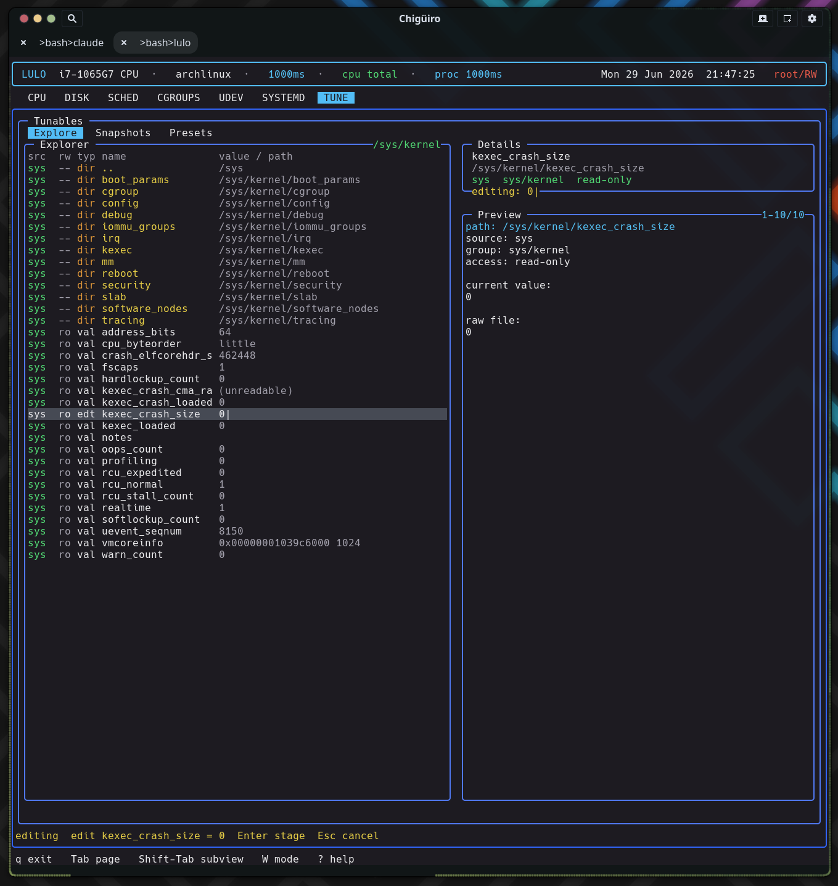

The TUNE page is a live explorer over /proc/sys, /sys, and /sys/fs/cgroup with the most elaborate editing model in the app: edits are staged in the UI, captured into portable .ltune bundles, and applied through a dedicated privileged helper – so the same file format round-trips capture and restore of kernel tunables.
TUNE is built around browsing real kernel state, editing values, and saving reusable bundles. It runs on the client/daemon split: a backend thread requests snapshots from lulod, which does the filesystem work and caches it (see Process Model & IPC).
| Subview | Purpose |
|---|---|
Explore |
Live filesystem-style browser for tunable sources |
Snapshots |
Saved point-in-time bundles |
Presets |
Named reusable bundles intended for repeated application |
Explore is a directory navigator over three roots, each tagged by source: /proc/sys (proc), /sys (sys), and /sys/fs/cgroup (cgroup). At the root it lists the three sources; inside a directory it stats entries, reads each regular file’s first line as its current value, and probes access(W_OK) to mark writability. A synthesized .. row provides upward navigation. Because it is path-oriented rather than a fixed list of known knobs, it reaches anything exposed under those trees.
| Column | Meaning |
|---|---|
src |
Source: proc (cyan) / sys (green) / cgroup (orange) |
rw |
Writable vs read-only |
typ |
dir, val, stg (staged), or edt (editing) |
name |
Entry name |
value/path |
Current value or path |
Many tunables get a human-readable note from a built-in path-to-description table (for example vm/swappiness, transparent_hugepage/enabled, block/*/queue/scheduler, and cgroup cpu.max), shown in the preview alongside the raw file contents.

TUNE deliberately separates editing a value from writing it to the kernel. There are three distinct mechanisms, and understanding the split is the key to the page.
i opens an in-app text editor on the value. On submit the new value is staged into staged_path / staged_value – it is not written to the kernel. Staged rows render green with a stg type and a staged: value, so pending changes are visible before you commit to them..ltune files are edited through the shared $VISUAL / $EDITOR handoff.This split is intentional: kernel pseudo-files are not ordinary config documents, so inline editing (with an explicit staging step) is the right UX there, while reusable bundles are real files and get the editor.
Both subviews list saved .ltune bundles with the same columns:
| Column | Meaning |
|---|---|
created |
Bundle creation timestamp |
itms |
Number of tunables captured |
name |
Display name |
The difference is intent: Snapshots are state captured from exploration work (a point-in-time record you might restore), while Presets are named bundles meant for repeated application. Selecting a bundle previews each captured tunable as [src] rw/ro group path = value. Bundles can be created, edited, renamed, deleted, and applied; “new” can also copy an existing bundle, cloning its body and appending “ copy” to the name.
Bundles are plain-text .ltune files under $XDG_DATA_HOME/lulod/tunables/ (or ~/.local/share/lulod/tunables/), split into snapshots/ and presets/ subdirectories. The format is a small header block followed by a blank line and one tab-separated row per tunable:
type=snapshot
id=20260629-203145
name=audio latency tweaks
created=2026-06-29 20:31:45
count=3
source writable path name group value
The id is a %Y%m%d-%H%M%S timestamp; the body rows are tab-separated source / writable / path / name / group / value. Listing a directory parses only the header for the metadata list (sorted newest-first), so the Snapshots and Presets lists are cheap to build even with many bundles.
Applying a tunable is the only place TUNE writes to the kernel, and it uses a different privilege route than the rest of the app. Where scheduler edits go through lulod-system’s session-based RW lease, tune-apply builds a LuloAdminTunePlan and runs it through pkexec lulo-admin apply-tune, piping the plan to the helper on stdin.
The plan is a tiny line protocol (lulo-admin-tune-v1 header plus path<TAB>value lines). The lulo-admin helper refuses to run unless it is root and the action is apply-tune, and it validates every target path against a strict allowlist – realpath then a prefix check limited to /proc/sys, /sys, and /sys/fs/cgroup – before writing the raw value. polkit gates the helper via the io.lulo.admin.pkexec.apply-tune action. Apply uses either the single staged value (when the staged path matches the selected Explore row) or every path=value pair parsed from the selected bundle, so one keystroke can re-apply a whole preset.
/sys/fs/cgroup controllers/sys/block/*/queue tunables this page can capture